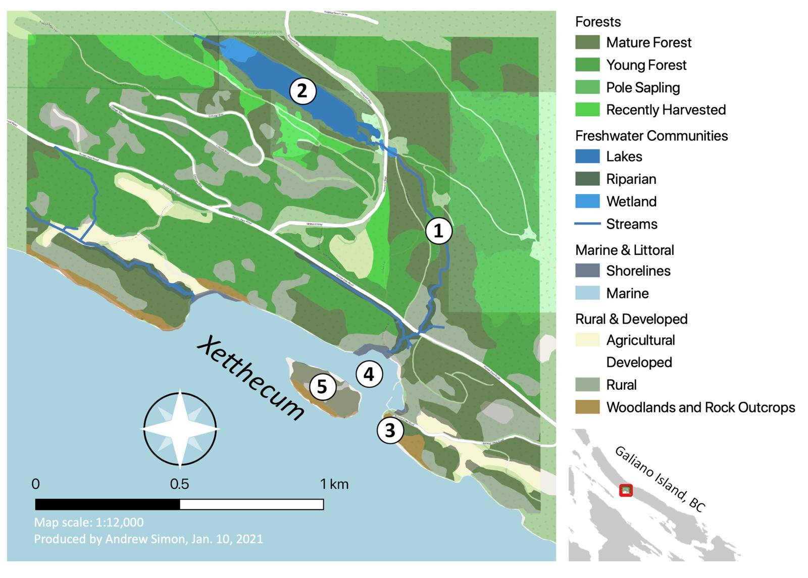

GIS and Data Analysis
The GIS and data analysis component of Phase I began with the creation of a GIS database using the open source mapping application QGIS. This GIS database incorporates several layers of relevant geospatial data and species occurrence records, summarized in Table 4. A preliminary map of the ecological communities represented at Xetthecum is presented in Figure 1.

Figure 1. Preliminary map of Xetthecum (Retreat Cove, Galiano Island, BC) project area, highlighting important ecological communities as previously mapped through the UP-CLOSE participatory mapping workshops (Emmings & Erickson 2004). Important natural features identified during Phase I of this project include: 1) Greig Creek; 2) Laughlin Lake; 3) Retreat Cove caves; 4) Retreat Cove eelgrass bed; 5) Retreat Island. Note: the basemap (Open Streetmap) behind this map distorts the colours representing each community in the legend because of the overlay in transparencies. Figure 3 shows the updated styles adopted for the final version of the online map.
We reviewed geospatial layers in our GIS and identified key features and attributes that could be mapped with content identified in our review of the literature (e.g., sensitive ecosystems documented in the Islands Trust Sensitive Ecosystem Guide). These resources were then tabulated based on common variables represented in the geospatial dataset, in order to facilitate the incorporation of these resources into our interactive map.
Once existing ecocultural datasets had been tabulated, we ran algorithms to examine the overlap / correspondence between species present in the project area and information attributed to species in the available ecocultural literature. A total of 524 species are documented in the project area, represented by 1,845 occurrence records. Through our review of the available literature, we tabulated ecocultural information for a total of 303 species. Between these two datasets, there was a one-to-one mapping or correspondence between 45 species (Table 7).
Table 7. Species Present at Xetthecum vs Species Represented in Ecocultural Literature
| Species Documented at Xetthecum | Species documented in Hul’q’umi’num’ Treaty Group (2011) and Turner (2014) | Correspondence |
|---|---|---|
| 524 spp. | 303 spp. | 45 spp. |
Based on the tables produced through this analysis, we integrated the results of our literature review with the biodiversity data collected from the study area, to visualize ecocultural content for a small subset of the species represented on our map of Retreat Cove (Table 8). Additional sources of biodiversity data were later included through ongoing outreach, research, and field surveys. Species documented in the ecocultural literature which were not found in our initial species inventory of Xetthecum (= 258 taxa) were sought through inventory work conducted during Phase II.
Table 8. Correspondences between Local Species Occurrences and Species Documented in Ecocultural Resources (Phase I). Note: the orthographies used for Hul’q’umi’num’ names are inconsistent between sources.
| Group | Scientific Name | Common English name | Hul’q’umi’num’ Name | Source |
|---|---|---|---|---|
| algae / kelp | Nereocystis luetkeana | bull kelp | q’amʔ (Cowichan) | Turner 2014 |
| birds | Anas platyrhynchos | mallard | Tunuqsun | Hul’q’umi’num’ Treaty Group 2011 |
| Athyrium filix-femina | lady fern | lə́q’ləq’ʔey’ | Turner 2014 | |
| Cygnus buccinator | trumpeter swan | S-hwuw’qun | Hul’q’umi’num’ Treaty Group 2011 | |
| crustacean | Cancer productus | red rock crab | Kwakwatl’shun | Hul’q’umi’num’ Treaty Group 2011 |
| fishes | Hexagrammos decagrammus | kelp greenling | Tth’umuqwa' | Hul’q’umi’num’ Treaty Group 2011 |
| Ophiodon elongatus | lingcod | Eeyt | Hul’q’umi’num’ Treaty Group 2011 | |
| mammal | Lontra canadensis | river otter | Sqeetl' | Hul’q’umi’num’ Treaty Group 2011 |
| mollusks | Ariolimax columbianus | banana slug | Q’uyatl’un | Hul’q’umi’num’ Treaty Group 2011 |
| Mollusca | molluscs (general) | Q’uyatl’un | Hul’q’umi’num’ Treaty Group 2011 | |
| Panopea generosa | geoduck clam | Pun’eq' | Hul’q’umi’num’ Treaty Group 2011 | |
| plants | Achillea millefolium | yarrow | tł’əlíqw’əłp (Cowichan) | Turner 2014 |
| Arbutus menziesii | arbutus | Qaanlhp | Hul’q’umi’num’ Treaty Group 2011 | |
| Camassia leichtlinii | great camas | spánxw (Cowichan) | Turner 2014 | |
| Carex obnupta | slough sedge | psháyʔ (Cowichan) | Turner 2014 | |
| Cirsium vulgare | bull thistle | xəw’xəwíłp (Cowichan) | Turner 2014 | |
| Cornus sericea | red-osier dogwood | sháalʔəłp (Cowichan) | Turner 2014 | |
| Corylus cornuta | beaked hazelnut | P’qw’axw | Hul’q’umi’num’ Treaty Group 2011 | |
| Equisetum telmateia | giant horsetail | Sxum’xum' | Hul’q’umi’num’ Treaty Group 2011 | |
| Fritillaria affinis | chocolate lily | stł’əlts’ə́ ləqw ’əs (Cowichan) | Turner 2014 | |
| Gaultheria shallon | salal | T’eqe' | Hul’q’umi’num’ Treaty Group 2011 | |
| Goodyera oblongifolia | rattlesnake plantain | ʔeləʔnáw (Cowichan) | Turner 2014 | |
| Holodiscus discolor | ocean spray (ironwood) | Qethulhp | Hul’q’umi’num’ Treaty Group 2011 | |
| Lilium columbianum | tiger lily | Sxamelexwthelh | Hul’q’umi’num’ Treaty Group 2011 | |
| Lysichiton americanus | skunk cabbage | ts’ákw’aʔ (Cowichan) | Turner 2014 | |
| Oemleria cerasiformis | bird cherry | məә́ łxəәl’ (Cowichan) | Turner 2014 | |
| Phalaris arundinacea | reed canary grass | sáxw əl (Cowichan) | Turner 2014 | |
| Poaceae | grass (general) | sáxw əl (Cowichan) | Turner 2014 | |
| Prunus emarginata | bitter cherry | st’əә́ ləәm (Cowichan) | Turner 2014 | |
| Pteridium aquilinum | bracken fern | Suqeen | Hul’q’umi’num’ Treaty Group 2011 | |
| Quercus garryana | Garry oak | P’hwulhp | Hul’q’umi’num’ Treaty Group 2011 | |
| Ribes bracteosum | stink currant | Sp’eetth' | Hul’q’umi’num’ Treaty Group 2011 | |
| Ribes divaricatum | coastal black gooseberry | t’ám’xw, t’émʔxw, t’ém’xw (Cowichan) | Turner 2014 | |
| Rubus armeniacus | Himalayan blackberry | sqw’óolməәxw (Upriver Fraser) | Turner 2014 | |
| Rubus leucodermis | blackcap raspberry | Tsulqama’ | Hul’q’umi’num’ Treaty Group 2011 | |
| Rubus parviflorus | thimbleberry | T’uqwum' | Hul’q’umi’num’ Treaty Group 2011 | |
| Rubus spectabilis | salmonberry | Lila' | Hul’q’umi’num’ Treaty Group 2011 | |
| Scirpus microcarpus | small-flowered bulrush | psháyʔ (Cowichan) | Turner 2014 | |
| Spiraea douglasii | hardhack | T’eets’ulhp | Hul’q’umi’num’ Treaty Group 2011 | |
| Symphoricarpos albus | snowberry | P’up’q’iyasulhp, P’up’q’iyas, T’ets’ulhp | Hul’q’umi’num’ Treaty Group 2011 | |
| Thuja plicata | western redcedar | Xpey' | Hul’q’umi’num’ Treaty Group 2011 | |
| Tsuga heterophylla | western hemlock | Thq’iinlhp | Hul’q’umi’num’ Treaty Group 2011 | |
| Urtica dioica | stinging nettle | Tth’uxtth’ux | Hul’q’umi’num’ Treaty Group 2011 | |
| Vaccinium parvifolium | red huckleberry | Sqw’uqwtsus | Hul’q’umi’num’ Treaty Group 2011 | |
| Zostera marina | eelgrass | chəәləәm (Cowichan) | Turner 2014 |
To inform subsequent search efforts, we identified potential locations of culturally significant species present in the study area based on the ecological communities represented in our GIS. Phase II field work later involved the selection of sites representative of each of the key ecological communities summarized in Table 5, which were inventoried with a focus on the ~300 species documented in Hul’q’umi’num’ Treaty Group (2011), Turner (2014) and Luschiim (2021), in order to generate a rich ecocultural dataset for the purpose of this pilot project. Florence James was consulted regarding the names of additional species, or variations of those documented by Hul’q’umi’num’ Treaty Group (2011), Turner (2014) and Luschiim (2021). Residents in the Retreat Cove neighbourhood were also invited to participate in this biodiversity mapping initiative via iNaturalist. (Later, we teamed up with Hunterston Farms and other partner organizations to plan a BioBlitz at Xetthecum during Phase III of this project.)
Finally, we identified a preliminary list of natural features to be documented in this project, identified in Figure 1, which may hold ecological and cultural value in the eyes of project participants. We continued the work of inventorying potentially important natural and cultural features of the landscape through Phase II. In Phase I, we also began the process of exploring ways in which visual art produced by project participants may be integrated as layer styles / tiling for each ecological community, and to illustrate other features of our digital map (continued during Phase II). Table 9 presents a summary of tasks related to GIS and ecocultural data analysis completed during Phase I.
Table 9. Phase I: GIS and Data Analysis Tasks
| Task | Start | End |
|---|---|---|
| Create GIS framework based on existing geospatial datasets | November 2020 | December 2020 |
| Compile historical and contemporary species occurrence records for project area | November 2020 | March 2022 |
| Identify key features and attributes of geospatial datasets to facilitate ecocultural mapping | November 2020 | January 2021 |
| Identify important natural and cultural features unrepresented in existing geospatial datasets (gaps to be filled through project) | November 2020 | January 2021 |
| Explore approaches to integrating visual art into ecocultural map | November 2020 | March 2022 |
| Summarize correspondences between ecological and cultural datasets, identifying strengths and gaps in available ecocultural information | January 2021 | January 2021 |
| Identify key cultural species and ecological communities to focus on in Phase II field work | January 2021 | March 2022 |